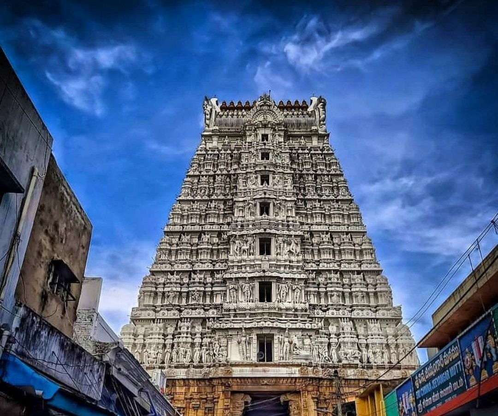
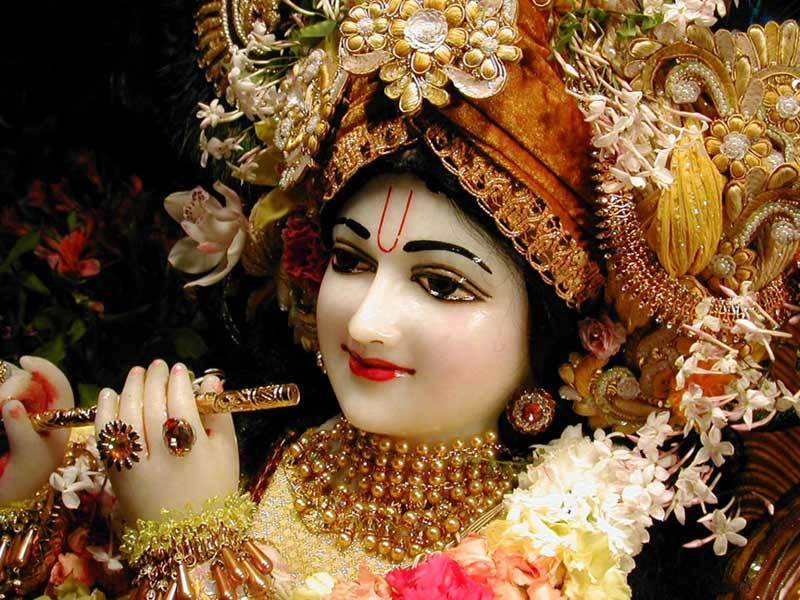

- Places To
- Visit
- in
- Tirupathi
For Pilgrimage ▼
1.Sri Venkateshwara Swamy Temple ▼
The Sri Venkateswara Swami Temple is a Hindu temple situated in the hill town of Tirumala at Tirupati in Tirupati district of Andhra Pradesh, India. The Temple is dedicated to Venkateswara, a form of Vishnu, who is believed to have appeared on the earth to save mankind from trials and troubles of Kali Yuga. Hence the place has also got the name Kaliyuga Vaikuntha and the deity here is referred to as Kaliyuga Prathyaksha Daivam. The temple is also known by other names like Tirumala Temple, Tirupati Temple and Tirupati Balaji Temple. Venkateswara is known by many other names: Balaji, Govinda, and Srinivasa.[3] The temple is run by Tirumala Tirupati Devasthanams (TTD), which is under control of Andhra Pradesh Government. The head of TTD is appointed by Andhra Pradesh Government.
2.Sri Padmavathi Ammavari Temple ▼
It is believed that the Goddess Lakshmi was born as Alamelu to Akasha Raja, the ruler of this region, and wed Venkateshwara of Tirupati. Goddess Lakshmi gave darshan to Lord Venkateswara on a red Lotus flower (Padma in Sanskrit) at Alamelu mangapuram after his deep penance for twelve years. According to tradition, the Mother Goddess manifested Herself in the holy Pushkarini called Padmasarovaram in a golden lotus. The Venkatachala Mahatyam states that Lord Suryanarayana was instrumental in blossoming of the lotus in full splendour. A temple dedicated to Lord Suryanarayana is situated on the eastern side of the Pushkarini. The Padma Purana gives a vivid description of the advent of the Goddess and subsequent wedding with Lord Srinivasa.
3.Varahaswami Temple ▼
According to the legend, Tirumala was originally called “Adivarahakshetra” (dwelling place of Sri Bhu Varaha Swamy). According to Brahmapurana, it is Lord Sri Bhu Varaha Swamy who granted land to Lord Sri Venkateswara Swamy on his request to reside in the sacred Seven Hills. As a thanks giving gesture, Lord Sri Venkateswara Swamy had gifted the privilege of first darshan and first naivedyam to Lord Sri Bhu Varaha Swamy. Thus as per the tradition, it is imperative for the pilgrims to pay a visit to Sri Bhu Varaha Swamy before visiting Lord Sri Venkateswara Swamy.
4.Sri Govindharajaswami Temple ▼

Sri Govindarajaswamy Temple is an ancient Hindu Vaishnavite temple situated in the heart of Tirupati city in Tirupati district of Andhra Pradesh in India. The temple was built during 12 century and was consecrated in the year 1130 AD by Saint Ramanujacharya.[1] The temple is one of the earliest structures in Tirupati and also one of the biggest temple complexes in Tirupati district. The Tirupati (down hill) city is built around this temple. The temple is currently administered by Tirumala Tirupati Devasthanams
5.Sri Kalyana Venkateshwara Swami Temple
Sri Kalyana Venkateswara swamy Temple is an ancient Hindu temple at Srinivasamangapuram in Tirupati. It is located in Tirupati District of Andhra Pradesh, India.[1] The temple is dedicated to Lord Venkateswara, a form of Vishnu and is referred to as Kalyana Venkateswara. The temple is categorised as an Ancient monument of National importance by Archaeological survey of India. It is one of the centrally protected monuments of national importance.
6.Talakona Waterfall ▼
Talakona is situated in Tirupati district of Andhra Pradesh, India. It is a resort with waterfalls, dense forests and wildlife. Talakona waterfall is in Sri Venkateswara National Park, Tirupati district of Andhra Pradesh. With a 270 feet (82 m)-fall, Talakona is the highest waterfall in Andhra Pradesh state.[1] Talakona is also known for the Lord Siddheswara Swamy Temple, which is located close to the waterfall.
7.Kapila Theertham ▼
Kapila Theertham is a famous Saivite Temple and Theertham, located at Tirupati in the Tirupati District of Andhra Pradesh, India. The idol is believed to be installed by Kapila Muni and hence Lord Siva here is referred to as Kapileswara.
The temple stands at the entrance to a mountain cave in one of the steep and vertical faces at the foot of the Tirumala hills which are part of Seshachalam Hills, where the waters of the mountain stream fall directly into Temple Pushkarini known as "Kapila Theertham". A huge stone statue of a seated bull "Nandhi", Shiva's steed, greets devotees and passersby at the entrance to the temple.
8.Silathoranam ▼
Natural Arch, Tirumala hills, a notified National Geo-heritage Monument,[1][2][3] is a distinctive geological feature 1 km (0.6 mi) north of the Tirumala hills temple, near the Chakra Teertham in Tirupati district in the state of Andhra Pradesh, India. The arch is also called Silathoranam (శిలాతోరణం) in the local language (Telugu language: sila means ‘rock’ and thoranam means a garland strung over a threshold, connecting two vertical columns or an ‘arch’ as in this case). The arch measures 8 m (26.2 ft) in width and 3 m (9.8 ft) in height, and is naturally formed in the quartzites of Cuddapah Supergroup of Middle to Upper Proterozoic (1600 to 570 Ma) due to natural erosive forces.
9.Iskon Tirupathi ▼

SKCON (International Society for Krishna Consciousness) Krishna Temples are located all over the world. Although, in almost every important city of India, there is an ISKCON Temple, ISKCON Temple in Tirupati is especially popular. Its architecture and location makes it is even more attractive to the devotees.
The idea for this temple germinated in the year of 1974 – 1975, when his holy Srila Prabhupada visited Tirumala- Tirupati on the request of Andhra Pradesh Government. Impressed with the spiritual atmosphere of the place and after seeing thousands of devotees visiting every day, he saw this Tirupathi as an ideal place to promote the teachings of Bhagwat-Gita and Lord Krishna while in turn creating an environment of amity throughout the world.
10.japali Teertham ▼

The Hanuman temple at Japali Teertham Tirumala is one of the least known and most worthy places during a visit to Tirumala. After a kilometre’s trek into the woods, the darshan of Lord Anjaneya is really a memorable experience. It is located 3 km from Gogarbham dam.
It is located amidst deep woods and a shrine of Lord Hanuman, which attracts several visitors. The famous festivals celebrated at this site are Tumburu Phalguna Pournami, Chakra Kartika Masa – Ksheerabdi Dwadasi, Kumaradhara Magha Pournami and Ramakrishna Pushya Pournami. Tourists can also trek from the dense forest to reach this holy pond in Tirumala.
It is believed that Lord Rama along with Sita and Lakshmana stayed here with Hanuman.
There is also a pond called Rama Kund within the temple premises. This place is believed to have been blessed by Lord Hanuman as he himself got peace of mind in this place
One can find a tree at the entrance of the temple with a form of Lord Ganesha at its base and it is believed that Lord Ganesha himself appeared there
Devotees also believe that the holy water of Japali teertham Tirumala can wash away all the evils and sins that they have committed in their life